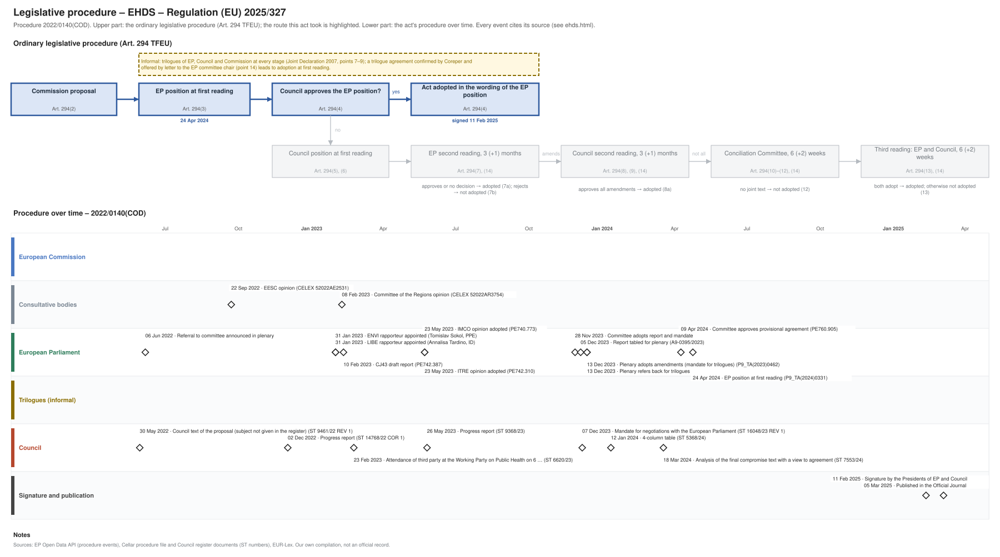

← All procedures · Regulation timeline
Procedure 2022/0140(COD), completed. Drawing: SVG · PNG · PDF (A3) · draw.io

| Date | Actor | Event | Document | Source |
|---|---|---|---|---|
| 2022-05-30 | Council | Council text of the proposal (subject not given in the register) | ST 9461/22 REV 1 | Cellar procedure file 2022/140 (Council register) |
| 2022-06-06 | European Parliament | Referral to committee announced in plenary | EP Open Data API, procedure 2022-0140 (REFERRAL) | |
| 2022-09-22 | Consultative bodies | EESC opinion | CELEX 52022AE2531 | Cellar procedure file 2022/140 |
| 2022-12-02 | Council | Progress report | ST 14768/22 COR 1 | Cellar procedure file 2022/140 (Council register) |
| 2023-01-31 | European Parliament | ENVI rapporteur appointed (Tomislav Sokol, PPE) | EP Open Data API, procedure 2022-0140 (participation RAPPORTEUR) | |
| 2023-01-31 | European Parliament | LIBE rapporteur appointed (Annalisa Tardino, ID) | EP Open Data API, procedure 2022-0140 (participation RAPPORTEUR) | |
| 2023-02-08 | Consultative bodies | Committee of the Regions opinion | CELEX 52022AR3754 | Cellar procedure file 2022/140 |
| 2023-02-10 | European Parliament | CJ43 draft report | PE742.387 | EP Open Data API, procedure 2022-0140 (COMMITTEE_TABLING_REPORT) |
| 2023-02-23 | Council | Attendance of third party at the Working Party on Public Health on 6 … | ST 6620/23 | Cellar procedure file 2022/140 (Council register) |
| 2023-05-23 | European Parliament | ITRE opinion adopted | PE742.310 | EP Open Data API, procedure 2022-0140 (COMMITTEE_ADOPTING_OPINION) |
| 2023-05-23 | European Parliament | IMCO opinion adopted | PE740.773 | EP Open Data API, procedure 2022-0140 (COMMITTEE_ADOPTING_OPINION) |
| 2023-05-26 | Council | Progress report | ST 9368/23 | Cellar procedure file 2022/140 (Council register) |
| 2023-11-28 | European Parliament | Committee adopts report and mandate | EP Open Data API, procedure 2022-0140 (COMMITTEE_ADOPTING_REPORT) | |
| 2023-12-05 | European Parliament | Report tabled for plenary | A9-0395/2023 | EP Open Data API, procedure 2022-0140 (TABLING_PLENARY) |
| 2023-12-07 | Council | Mandate for negotiations with the European Parliament | ST 16048/23 REV 1 | Cellar procedure file 2022/140 (Council register) |
| 2023-12-13 | European Parliament | Plenary adopts amendments (mandate for trilogues) | P9_TA(2023)0462 | EP Open Data API, procedure 2022-0140 (PLENARY_AMEND) |
| 2023-12-13 | European Parliament | Plenary refers back for trilogues | EP Open Data API, procedure 2022-0140 (PLENARY_REFER_COMMITTEE_INTERINSTITUTIONAL_NEGOTIATIONS) | |
| 2024-01-12 | Council | 4-column table | ST 5368/24 | Cellar procedure file 2022/140 (Council register) |
| 2024-03-18 | Council | Analysis of the final compromise text with a view to agreement | ST 7553/24 | Cellar procedure file 2022/140 (Council register) |
| 2024-04-09 | European Parliament | Committee approves provisional agreement | PE760.905 | EP Open Data API, procedure 2022-0140 (COMMITTEE_APPROVE_PROVISIONAL_AGREEMENT) |
| 2024-04-24 | European Parliament | EP position at first reading (Art. 294(3) TFEU) | P9_TA(2024)0331 | EP Open Data API, procedure 2022-0140 (PLENARY_AMEND_PROPOSAL) |
| 2025-02-11 | Signature and publication | Signature by the Presidents of EP and Council | EP Open Data API, procedure 2022-0140 (SIGNATURE) | |
| 2025-03-05 | Signature and publication | Published in the Official Journal | EP Open Data API, procedure 2022-0140 (PUBLICATION_OFFICIAL_JOURNAL) |
| Date | Document | Kind | Subject |
|---|---|---|---|
| 2022-05-30 | ST 9461/22 REV 1 | council-text | Proposal for a Regulation on the European Health Data Space |
| 2022-09-22 | CELEX 52022AE2531 | opinion | Opinion of the European Economic and Social Committee on the Communication from the Commission to the European Parliament and the Council — A European Health … |
| 2022-12-02 | ST 14768/22 COR 1 | council-progress-report | Progress report |
| 2023-02-08 | CELEX 52022AR3754 | opinion | Opinion of the European Committee of the Regions on the European Health Data Space |
| 2023-02-08 | PE740.773 | ep-draft-opinion | DRAFT OPINION on the proposal for a regulation of the European Parliament and of the Council on the European Health Data Space |
| 2023-02-10 | PE742.387 | ep-draft-report | DRAFT REPORT on the proposal for a regulation of the European Parliament and of the Council on the European Health Data Space |
| 2023-02-14 | PE742.310 | ep-draft-opinion | DRAFT OPINION on the proposal for a regulation of the European Parliament and of the Council on European Health Data Space |
| 2023-05-23 | PE742.310 | ep-opinion | OPINION on the proposal for a regulation of the European Parliament and of the Council on European Health Data Space |
| 2023-05-25 | PE740.773 | ep-opinion | OPINION on the proposal for a regulation of the European Parliament and of the Council on the European Health Data Space |
| 2023-05-26 | ST 9368/23 | council-progress-report | Progress report |
| 2023-12-05 | A9-0395/2023 | ep-report | REPORT on the proposal for a regulation of the European Parliament and of the Council on the European Health Data Space |
| 2023-12-07 | ST 16048/23 REV 1 | council-position | Mandate for negotiations with the European Parliament |
| 2023-12-13 | P9_TA(2023)0462 | ep-position | European Health Data Space |
| 2024-01-12 | ST 5368/24 | trilogue | 4-column table |
| 2024-03-18 | ST 7553/24 | agreed-text | Analysis of the final compromise text with a view to agreement |
| 2024-03-22 | PE760.905 | agreed-text | PROVISIONAL AGREEMENT RESULTING FROM INTERINSTITUTIONAL NEGOTIATIONS Proposal for a regulation the European Parliament and the Council of the European Union on … |
| 2024-04-24 | P9_TA(2024)0331 | ep-position | European Health Data Space |
{kind=link}
{kind=link}